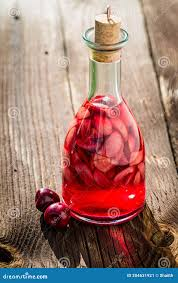

主要产地与香气差异：
共通香气特征：
使用场景：
樱桃酒（Cherry Wine）
- 主要产于法国、德国、意大利等欧洲国家，以优质樱桃为原料，经过发酵和橡木桶陈酿而成。
- 不同产区和酿造工艺的樱桃酒香气差异主要体现在果香的甜度、酸度、橡木桶带来的香草和焦糖气息，以及陈酿时间带来的干果和香料感。
果香浓郁，带有明显的樱桃、黑莓、李子等水果香气。橡木桶陈酿带来的香草、焦糖、干果和微微的香料感。整体香气甜美、复杂，带有微微的辛辣和木质调。
常用于果香调、甜香调、东方调香水，赋予作品甜美、成熟、复杂的气息。适合秋冬季节的正式场合、晚宴香氛、成熟稳重型香水。也常作为中调或后调，与玫瑰、琥珀、香草、檀香等搭配，增强层次感和持久度。